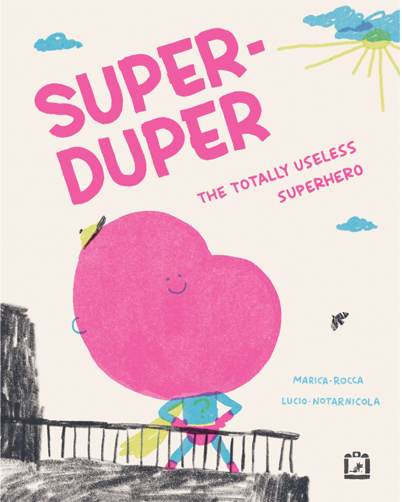

English edition
Super-Duper
The totally useless superhero
Not all superheroes are the same. Super-Duper is convinced he has extraordinary powers: he can make flowers grow, move the Sun with yoga, and even stop the rain after days of intense concentration. But there is one person for whom he truly is a superhero: his beloved Granny. For her, Super-Duper finds a way to make flowers bloom, bring light into the day and, above all, make her laugh. A gentle story about care, attention and the small everyday powers that can make a real difference.
Buy from Amazon. External links open in a new tab.
This is the English-language edition of Super Fluo. The Italian edition has been featured in reviews, selections and an illustration exhibition. Explore the story, artwork and recognition of Super Fluo.